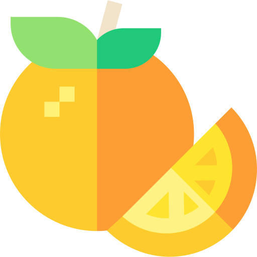

Welcome to Learn, where we teach you about mushrooms and their benefit on your mind, body, and spirit.
Catagories
-

Mind
-

Body
-

Spirit
-

Flavor
Founded in 1982, Mushroom started as a part of a movement of using mushrooms as a tool for our body and mind. Using them we can grow into the humans that fully enjoy life like no other.
Mind
Mushrooms have wonderful effects on the brain. Many scientific studies results are mind blowing.
Mushrooms improve brain function in many different ways— there’s a full spectrum, from Enoki mushrooms improving memory to Portabello to increase clarity. Here’s a break down of some of the many benefits from each of the mushrooms we sale here at Mushroom.com
Eating mushrooms more than twice a week could prevent memory and language problems occurring in the over-60s, research from Singapore suggests. A unique antioxidant present in mushrooms could have a protective effect on the brain, the study found. The more mushrooms people ate, the better they performed in tests of thinking and processing. [full article]
Body
Mushrooms have wonderful effects on the brain. Many scientific studies results are mind blowing.
Mushrooms improve health immensely— in a complex many with many of factors coming into place. We’ll break down a couple mushrooms for you.
Enoki — Each mushroom has unique ways to improve brain function, and there’s been extensive scientific study on each one. For example— in the Nagano Prefecture of Japan a scientist found that the consumption of enoki mushrooms lowered the risk of cancer for individuals. [full article]
Cordyceps — In a 2010 study published in the Journal of Alternative and Complementary Medicine, a daily cordyceps supplement appeared to improve exercise performance, albeit modestly, in a small group of older adults, ages 50 to 75.[full article]
Spirit
Mushrooms have wonderful effects on the brain. Many scientific studies results are mind blowing.
The apocryphal tale goes like this: In the late 1600s, the Turkish army swept across much of Eastern and Central Europe, arriving at Vienna in 1683. Besieged and desperate, the Viennese needed an emissary who could cross Turkish lines to get a message to nearby Polish troops. Franz George Kolshitsky, who spoke Turkish and Arabic, took on the assignment disguised in Turkish uniform. After many perilous close calls, Kolshitsky completed his valiant deed, delivering news of the Poles’ imminent rescue to Vienna. On September 13, the Turks were repelled from the city, leaving everything they brought, including strange bags of beans, which were thought to be camel feed. Kolshitsky, having lived in the Arab world for several years, knew these to be bags of coffee. Using money bestowed on him by the mayor of Vienna, Kolshitsky bought the coffee and opened Central Europe’s first-ever coffee house (The Blue Bottle), bringing coffee to a grateful Vienna.
Flavor
Mushrooms have wonderful effects on the brain. Many scientific studies results are mind blowing.
The apocryphal tale goes like this: In the late 1600s, the Turkish army swept across much of Eastern and Central Europe, arriving at Vienna in 1683. Besieged and desperate, the Viennese needed an emissary who could cross Turkish lines to get a message to nearby Polish troops. Franz George Kolshitsky, who spoke Turkish and Arabic, took on the assignment disguised in Turkish uniform. After many perilous close calls, Kolshitsky completed his valiant deed, delivering news of the Poles’ imminent rescue to Vienna. On September 13, the Turks were repelled from the city, leaving everything they brought, including strange bags of beans, which were thought to be camel feed. Kolshitsky, having lived in the Arab world for several years, knew these to be bags of coffee. Using money bestowed on him by the mayor of Vienna, Kolshitsky bought the coffee and opened Central Europe’s first-ever coffee house (The Blue Bottle), bringing coffee to a grateful Vienna.